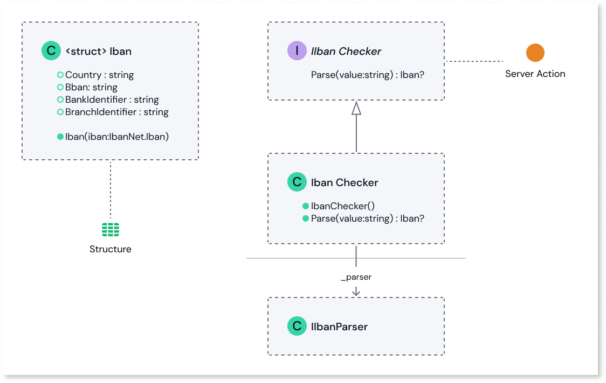

Load the C# project file, OutSystems.IbanChecker.csproj, using a supported IDE.
Files in the project:
IIbanChecker.cs: Defines a public interface named IIbanChecker, decorated with the OSInterface attribute. The interface has a single method named Parse, which takes an IBAN string value as input and returns an Iban struct. Parse is exposed as a server action to your ODC apps and libraries.
IbanChecker.cs: Defines a public class named IbanChecker that implements the IIbanChecker interface. The class is a convenient wrapper for the IbanNet library, an open-source library that provides functionality for parsing and validating IBANs. The class has a private field named _parser, which is an instance of the IIbanParser interface.
Iban.cs Defines a struct named Iban, decorated with the OSStructure attribute. The struct has four public properties: Country, Bban, BankIdentifier, and BranchIdentifier. Iban is exposed as a structure to your ODC apps and libraries.
UML Diagram:

Edit the code to meet your use case. If your project requires unit tests, modify the examples found in ../OutSystems.IbanChecker.UnitTests/IbanCheckerTests.cs accordingly.
Run the Powershell script generate_upload_package.ps1 to generate ExternalLibrary.zip. Rename as required.
Upload the generated ZIP file to the ODC Portal. See the External Logic feature documentation for guidance on how to do this.
(Excerpted from the main README of the External Libraries SDK, please refer to that document for additional guidance.)